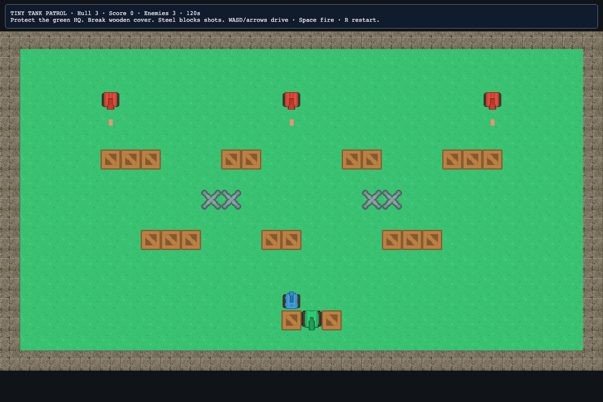
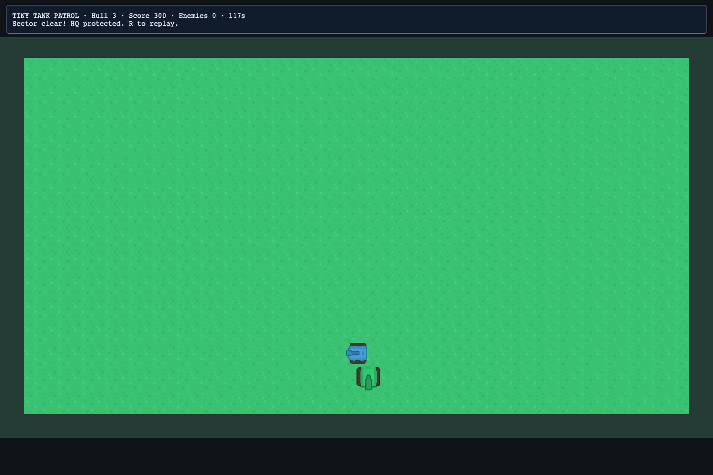

T30 Tiny Tank Patrol — build a top-down tank arena
Project: welcome → 2D → Tiny Tank Patrol — NES-style Arena. Result: drive a blue tank, break wooden cover, destroy three red enemies and protect the green headquarters.
The game is an original small arena inspired by NES-era tank games. It does not copy Nintendo/Battle City code, maps, graphics or audio. Vehicles and props come from the owner's CC0 Kenney Top-down Tanks Remastered pack; the complete notice is included in the project.
1. Play, then identify the parts#
In main Play, use WASD/arrows to drive in four directions. The tank faces the direction of travel. Hold Space to fire. Destroy all red tanks before the time limit. If the blue tank or green HQ loses all its HP, the run ends. R resets the arena.
Wooden crates are destructible cover. Steel obstacles and solid tiles block movement and shots. Shells from your tank can damage HQ too: avoid shooting straight through it. Enemy tanks choose directions and occasionally favor moving toward HQ, so protecting only your own tank is not enough.

2. Open and navigate the arena#
Stop Play, then choose 2D Level → Open → arena.level2d.json. Home fits the map. Wheel zooms and middle/right drag pans. Objects is the quickest way to find Player, base, enemy, brick or steel.
The map is 30×17 cells at 32 pixels per cell. The player/enemy tanks are slightly smaller than a cell so they fit through single-cell passages. Keep clear routes wide enough for the whole tank, not just its centre.
Use V to select/move; Shift-click selects several; Ctrl/Cmd+D duplicates; Delete removes objects. Inspector edits apply to the first selected object.
3. Paint a steel boundary and a clear lane#
- Select World in Level.
- Build → pick a terrain sprite. With Solid tiles on, paint a short boundary using B or R.
- Turn Solid tiles off and paint a clear path around it.
- F5 tests the unsaved arena. Move into the boundary and fire at it: the controller reads solid tile colliders as steel.
- Shift+Esc returns to editing. Undo the experiment or keep a route through the boundary.
A solid tile is indestructible in this game. Use a scripted brick object for cover that shells can break. A non-solid decoration can still look substantial, so test collision after changing artwork.
Checkpoint: tanks cannot drive through the new solid tiles, and shells disappear against them.
4. Tune the player's tank in Inspector#
Select Player. Its scripts/tank-object.js attributes are:
| Field | Default idea |
|---|---|
| kind | player. |
| hp | 3 hits before destruction. |
| speed | 120 pixels per second. |
| fireDelay | Used by enemy objects; the player's cooldown is in the Level controller. |
| score | Awarded for defeated enemies, not the player. |
Change speed to 90, test, then try 150. The smaller value gives more time to line up a shot. Keep kind as player; the controller needs one player object. Its name Player also supports the generated camera.
The sample uses a custom arena controller for collision and shells; its tank objects do not need dynamic physics bodies. Arcade/Matter remain available for other 2D projects.
5. Add and balance an enemy#
Items → Enemy selects a working red tank with its script and values. Use B Brush to click/drag it onto clear ground, or drag its card directly onto the map. The toolbar and translucent preview show what will be placed.
You can also choose an existing red enemy through Objects and duplicate it, or Save as variant and place that preset from Assets.
Set its kind to enemy. Try hp 1, speed 45 and fireDelay 2.5. That enemy is easier than the default. A lower fireDelay fires more often; it is measured in seconds. Set score to 250 to make it worth more points.
Enemy tanks turn when blocked and choose a direction periodically. They do not have a full path planner. Arrange corridors so an enemy can turn and approach the base; do not seal its spawn behind permanent steel unless that is your intended scenario.
Checkpoint: adding an enemy increases the HUD count, and defeating it adds your chosen score.
6. Create destructible cover#
Select a wooden crate with kind brick. Duplicate it with Ctrl/Cmd+D and move the new crate into a firing lane. Keep Body as none: the custom controller uses this object's visible size and script kind for collision.
Set hp to 2. Now the first shell damages it and the second destroys it. Use a line of crates to make a temporary shield around HQ, with a gap for the player to leave.
To create permanent cover, duplicate an existing steel object or set a cover object's kind to steel. Steel is never damaged by shells. The hp field is ignored for that kind.
7. Replace a picture while retaining mechanics#
Choose another picture in the bank, then V-select the cover object again. In Inspector, click Use bank sprite: …. Its script and body settings stay attached; the new picture changes its appearance. Width/height stay under your control.
A useful exercise is to use a stone picture for steel and a wooden picture for brick, so players can predict which surfaces will break. Keep colliders and visible sizes consistent. The game measures cover bounds from the picture's dimensions and entity scale.
8. Protect and move HQ#
Select the green base. Its kind is base, hp is 3 and speed is 0. Put it inside a small enclosure made from destructible cover. Ensure the blue tank has a way out and that at least one route lets enemies threaten HQ.
HP 1 makes a tense scenario; HP 5 makes an easier lesson. Duplicating the base creates another target, but the AI favors the first surviving base it finds. Start with one HQ while learning the rules.
Test three outcomes: the player is destroyed, HQ is destroyed, and all enemies are destroyed while HQ survives. R should restart each outcome.
9. Change game-wide values in Level#
The Level controller is scripts/tank-game.js. Its Level controller attributes JSON is:
{"spriteOffset":180,"bulletSpeed":300,"playerFireDelay":0.3,"timeLimit":120,"enemyAggression":0.65}The spriteOffset compensates for the supplied tank art facing down at zero rotation. Keep 180 for these sprites. Change timeLimit to 180 and playerFireDelay to 0.5, then click Apply controller attributes. F5 now gives more time but slower firing. Bullet speed is in pixels per second. Enemy aggression is between 0 and 1: larger values more often choose a direction toward HQ.
Object values tune one actor. Controller values tune the match. For custom mechanics, edit scripts/tank-game.js through Nord's Code tab; tank-rules.js holds the small collision helpers and tank-object.js declares Inspector attributes.
10. Organize the map with layers#
Add a Scenery layer and paint non-solid grass details there. Lock it while moving tanks. Keep gameplay obstacles on a layer with parallax 1. A hidden layer is excluded from compilation, so hiding a layer that contains all enemies can immediately satisfy the victory condition.
Use Objects to audit how many players, enemies and bases remain after editing. Use a reusable enemy variant to make consistent patrols without repeatedly entering the same values.
11. Save, test and export your arena#
Save with basename arena to regenerate the existing scenes/arena.scene.json. Save as another name to keep a second version, then choose Use as game start when you want main Play/export to use it. The controller and actor scripts are project-owned and preserved by later saves.
The game's custom PNGs and their CC0 notice are already in the project. Built-in art you add is copied during Save. Export with Nord's normal Export command; no CDN or external game service is needed.

Troubleshooting and design challenges#
| Symptom | Check |
|---|---|
| New tank is only a picture | Attach scripts/tank-object.js and give it kind enemy; duplicating a working enemy is easiest. |
| Wooden wall cannot be destroyed | A solid tile underneath it is steel. Paint a non-solid floor under the brick object. |
| Player cannot fit through a gap | Check width/height and leave clearance around every obstacle. |
| Shots damage HQ | That is part of the rules; move the firing lane or improve cover. |
| Empty arena wins immediately | At least one visible-layer enemy must have kind enemy. |
| Main Play ignores the edited arena | Save and choose Use as game start. |
Build a narrow defensive maze, a wide arena with fragile cover, and a low-ammunition-style challenge by increasing playerFireDelay. Keep each variation as a separate authoring file. You now know the same editor workflows used by the machine puzzle and the two-floor dungeon.